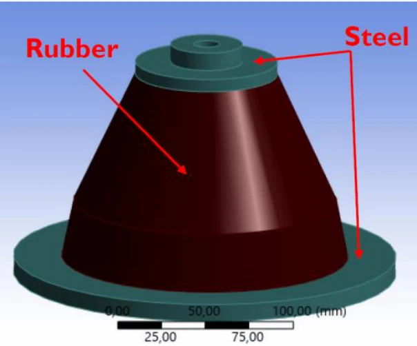
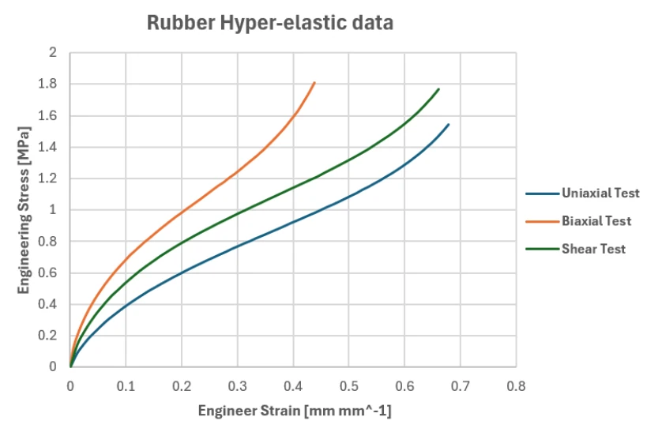
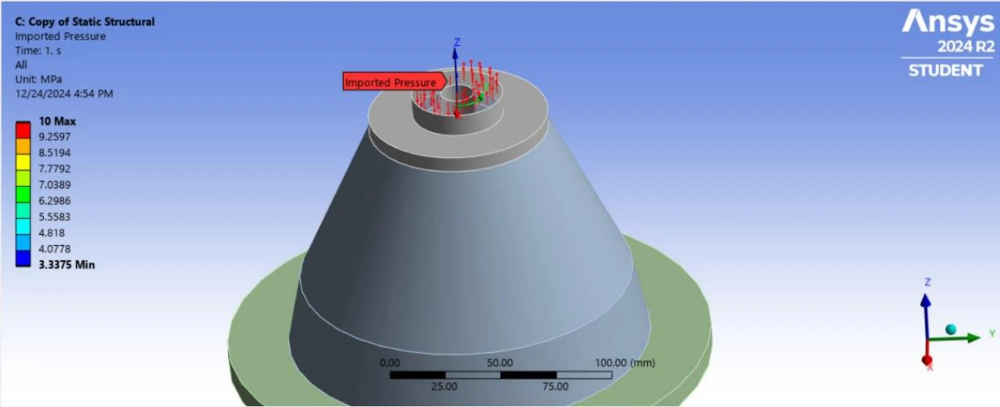

Academic team project
Nonlinear Analysis of Hyperelastic Rubber Support
Modelling the static response of a steel–rubber mount under imposed displacement and a non-uniform pressure load.
- Software
- ANSYS Workbench
- Period
- September 2024 to January 2025
Introduction
The exercise compared how a steel–rubber support responds to vertical and lateral displacement and how its reaction forces develop under a spatially varying pressure. The hyperelastic model accounted for the rubber’s nonlinear response at large strains.
Method
Baseline model
We set up a linear steel–rubber model in ANSYS Workbench using the supplied geometry and checked the vertical and lateral reactions to imposed displacements.
Nonlinear material and loading
We fitted a nine-parameter Mooney–Rivlin model to supplied uniaxial, biaxial and shear data. A pressure field from a comma-separated values (CSV) file was imported in cylindrical coordinates.
My contribution
I carried out modelling work with teammate support, contributed substantially to the report and shared interpretation of the simulation outputs.




Results
The linear model resisted vertical displacement more strongly than lateral displacement. Under the non-uniform pressure case, the nonlinear simulation showed a predominantly vertical reaction.
The comparison describes the response under the modelled static loads. Assessing damping or vibration isolation would require a dynamic study.

